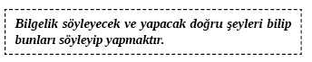
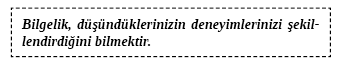
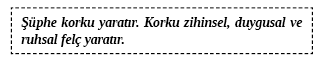

13. BÖLÜM - KENDİ KİŞİLİĞİNİZİ GERÇEKLEŞTİRMEK: HAYAT BOYU BAŞARI VE REFAH ANAHTARI
Şimdi doğanızı ve nasıl en gerçek kişiliğinize yöneleceğinizi bulmanın zamanı.
Bilgelik, etik ve kibarlık, birbirlerini mükemmel tamamlayan üçgenin ayaklarıdır. Nazik davranan ve etik davranışlar sergileyen bilge birey birçok hayata mükemmel şekilde dokunmaya hazırlanmıştır. Kimse tek gecede bilge, kibar ve etik olmaz. Bu üç kısımlık ideale doğru ilerlerken daha gerçek ve olduğumuz gibi yaşıyoruz.
Nazik Konuşmacı
Bir insanın niyetleri, genellikle iyi iletişim becerileri öğrenip uygulandıktan sonra iletişiminden anlaşılacaktır.
Yeni Ahit sevginin sabırlı, yardımsever ve nazik olduğunu söylemektedir. Nezaket, kısmen yargılamadan kabul etmemizden gelir ve sevginin doğal uzantısı ve sonucudur. Nazik olmak gerçek kişiliğimizde bulunur.
Bir ölçüsü bulunsaydı sizin ‘nezaket oranınız’ ne olurdu?
Kendi gündeminizi öne sürmeden başkalarına gerçekten yardım edebildiğinizi düşünüyor musunuz?
Birinin sözünü kesmeden dinlemeyi kolay buluyor musunuz?
Kendinizden bahsetmeden önce başkalarına onlar hakkında sorular soruyor musunuz?
Konuştuğunuz çocukların göz seviyelerine inmek için diz çöküyor musunuz?
Yapabildiğiniz zamanlarda iltifatta bulunuyor musunuz?
Başkaları için iyi şeyler yapmayı kolay buluyor musunuz?
Onlarla ‘mutlu’ olduğunuzu göstermek için insanlara gülümsüyor musunuz?
Başkalarıyla iletişim kurarken nazik bir tonda konuşuyor musunuz?
Başkalarını eleştirmekten kaçınıyor musunuz?
Sinirinizi oradan geçen masum birinden değil de doğru kişiden çıkarıyor musunuz?
İnsanların huzurlu olmalarına yardım ediyor musunuz?
İnsanların isimlerini hatırlayıp onları gördüğünüzde isimleriyle selamlıyor musunuz?
Yukarıdaki sorulara verdiğiniz “Evet” cevabı bu bölümü bitirmeden önce geri dönüp düşünmek isteyeceğiniz türden bir cevaptır. Cevaplarınız ne olursa olsun bugün bağlantı kurduğunuz herkese karşı nazik davranarak kendi gerçek kişiliğinize ulaşmaya başlayabileceksiniz.
Etik Birey
Doğru şeyi yapmak ne kadar önemli? Kendinize karşı etik ve gerçek olmak ‘kendiliğinizin’ tek yoludur. Biri ‘hatalı bir şey yaptığında’ bilinçaltı bu kişiyi numaralandırır. İçinizden gelen ses gibi bilinçaltınız da sizin doğru şeyi yapmanızı (onun doğru olarak algıladığı şekilde) ister ve yanlış yaparsanız çok suçlu hissetmenizi sağlar. Çok fazla yanlış şey yaptığınızda bilinçaltı size acı, fiziki aksaklıklar, anksiyete, depresyon, panik atak vb. sinyaller verecektir. Anksiyete sorununuz varsa -bu belirtiyi kendiniz veya dış bir etken tetiklemiş olsa da- bilinçaltınız size bir şeyin yanlış gittiğine dair bilinçli bir sinyal veriyor demektir.
Gerçek ve asıl benliğiniz, bilinçaltına bilincinize olduğundan daha yakındır. Yine de bu bilinçaltı, bilince göre daha nazik veya kibar olduğu sonucunu çıkaramayız. Bilinçaltı sadece bütün yaşanmışlıklarınızın, anılarınızın, acılarınızın ve neşelerinizin toplamıdır. Bilinçaltı, davranışımızı istemediğimiz veya ihtiyacımız olmayan yönden istediğimize ve ihtiyacımıza doğru çeker. Bu kısım, iyi ya da kötü bir bireyin hedef arayan bölümüdür. Her zaman hedefe ulaşmak ister. Öte yandan asıl benliğiniz doğru şeyi yapmak ister. Bazen bu ikisi çatışır. Çatıştıklarında bilinçaltı ‘bilincin müdahalesi’ olmadığı sürece insanı yönetecektir.
Bilinçaltı kötü değildir, iyi ya da kötü bizim hedef arayan davranışımızı yöneten kısmımızdır. Bilinçaltı olmadan araba sürerken aynı anda sakız çiğneyemezdik. Bu zihin, yaşadığımız bütün davranışsal izlerle doludur. Bu, işe giderken arabamızı bu zihnin sürdüğü anlamına gelir. Araba kullanırken günün problemleri veya hayalleri içinde kaybolabiliriz. İşte bilinç bu problemler ve hayallere katılır. Bu arada bilinçaltı ise arabayı işe doğru sürer. Bunu düşündüğünüzde gerçekten de harika değil mi?
Etik İnsan için Alıştırma. Kişisel etik kursuna bir gün harcayın. Bu kurs ücretsiz ve kursu kendiniz tasarlayacaksınız. İnsanlar sizinle konuşurken konu veya içeriğe bakmaksızın sizin söyleyeceğiniz veya söylemeyeceğinizi şeyin bu insana yardım mı edeceğini yoksa zarar mı vereceğini belirleyin. Gün içinde bağlantı kurduğunuz her insandan aldığınız sözlü ve sözsüz geri bildirimlere çok dikkat edin. Her iletişim zihninizde henüz tazeyken iletişiminize aldığınız cevapları kaydedin. Günün sonunda bilerek ve amaçlı kibarlığınızın düzeyini belirleyin. Herhangi bir noktada birisi için zarar teşkil ettiniz mi? Bunu gelecekte nasıl değiştirebilirsiniz?
Bilgin İnsan
Tüm zamanların en başarılı filozoflarından Napoleon Hill her birimizin sonsuz zekâya erişimi olduğunu söylerdi. İçinizdeki biyolojik sınırlamalar hariç mükemmel sezgilere, bilgi birikimine ve bilgeliğe ulaşabilirsiniz. Yine de bilgelik, bilgi sahibi olmaktan daha ötedir; doğru olan şeyi yapmaktır, hayatın tuzaklarını görüp bunlardan nasıl kaçınmak gerektiğini bilmektir, neden ve sonucu tanımaktır. Ne ekersen onu biçersin. Bir şey söylediğinizde veya yaptığınızda bu size ya iyi ya da kötü şekilde geri döner. (Bazen ekmek ve biçmek aynı çiftçilik süreci gibidir: Planlamayı ilkbaharda yaparsınız. Hasat da sonbaharda gelir.)

Bugün içinde belki de şimdi içeri girip “Merhaba” demek için kendinize izin verin. Kendi kendinize konuşmanız gerçeği karşısında gülümseyin. Bütün günü başkalarıyla konuşarak geçiriyorsunuz ama şimdi kendinizi dinleyebilirsiniz. Sessizce oturun. Zihninize başka düşünceler girdikçe onları tanıyın ve sönüp gitmelerine izin verin. Sessizliği dinleyin. Aklınızdan herhangi bir endişe ya da problem geçerse sadece geçip gitmesine izin verin. Kendinizi dinlemek için beş-on dakika ayırın ve yalnızca sessiz olun. Bunun sizi ne kadar iyi hissettirdiğini görün çünkü ruhunuza dokunuyorsunuz.

Zirvedeki İnsanlar Hayatı Bilerek ve İyi Niyetlerle Yaşarlar
Biz gerçekten mutlu olmak için buradayız. Aynı zamanda eşsiz ve özel bir şey yapmak ve olmak için buradayız. Hayatınızın amacı ne? Bu bölümün hedefi, hayattaki özel amacınızı ve yolunuzu bulmanıza yardım etmektir. Bunun sizin için ne olduğuna dair hiçbir fikrim yok ama yolunuzda yardım edecek bir haritayı paylaşabilirim.
Hayattaki amacınız kim olduğunuzla doğrudan bağlantılıdır. Çok mutlu ömür sürenler bir amaç hissinden daha fazlasına sahiptirler; onlar amaçlarını bilerek yaşarlar. Bilerek bir amaçla yaşadığınızda hayatın size sunacağı bütün zenginlikleri elde edeceksiniz. Bilerek yaşamak, hayatınızda en çok değer verdiğiniz insanlarla bir arada olmak anlamına gelir. Amacınız, ‘gerçek siz’in bir yansımasıdır.
Pratik olarak hedef belirlemek, bu kitabın daha önceki kısımlarında öğrendiğiniz üzere hayatın önemli bir kısmıdır. Çoğu insan hayattaki en büyük amaçlarını yaşamanın dışında hedef belirlemeye çalışırlar. Hedef belirleme, sizin temel tutkunuz dışında gerçekleştiyse bu sadece sıkıntı ve zihinsel acı getirir. Bu bölüm hayattaki amacınızı keşfetmenize, hayatınızı bir kez ve tamamen yoluna sokmanıza yardımcı olacaktır. Hayatınızın amacı ve göreviniz, kendinize aşağıda cevaplayabileceğiniz bazı önemli soruları sorarak keşfedilebilir.
Keşif Amacı
Siz geliştikçe hayattaki amacınızın değişmesi muhtemeldir. Bu soruların cevaplarını bulmak için kendinizi gerçekten aradıysanız gezegendeki yerinizin önemini görebilirsiniz. Hayatlarımız üzerinde tahminimizden çok daha büyük etki ettiğimiz görülüyor. Bunun nedeni de bir nedenden dolayı burada olmamızdır. Bu günümüzü ve geleceğimizi yaşama, büyük oranda değiştirme yeteneğine sahibiz. Hayattaki alakasız şeylerden uzaklaşıp gitmeniz gereken yola doğru kendinizi yönlendirebilirsiniz.
Hayatta ilerledikçe bazen sıkıntılı olabilirsiniz. Böyle zamanlarda aklınızdan şu fikri geçirmelisiniz:

Amaç Düşünmekle Başlar
Etrafınıza baktığınızda her şeyin ilk başta bir düşünce olduğunu keşfedeceksiniz. Hiçbir istisna yok değil mi? Çoğu insan ilk defa düşündüğünde bu kesinlikle korkutucu bir gerçektir. Odadaki bir nesneye bakın. Bu nesneyi icat edenler ona dair ilk fikri edindikten nesneyi gerçekleştirene kadar ne kadar zaman geçmiştir? Her şey başta bir düşünceydi. Var olan hiçbir şey özünde bir düşünceden daha fazlası değildi.
Biz düşündüğümüz şeyiz.
Olduğumuz her şey düşüncelerimizden meydana gelir.
Düşüncelerimizle dünyayı kurarız.
Saf olmayan bir zihinle konuşun veya harekete geçin.
Ve sorunlar peşinizi bırakmayacaktır.
Saf bir zihinle konuşun ve harekete geçin.
Ve mutluluk peşinizden gelir...
Buda
Etrafınıza bakın. Özgür bir ülkede yaşıyorsanız çevreniz büyük oranda düşüncenizin ürünüdür. Güzel bir ortamda yaşıyorsanız bu sizin düşüncelerinizle ilgili fikir verir değil mi? Çocukken size sunulan inançlarınızın çoğunun sınırlandırıcı olduğunu fark ettiğinizde muhtemelen onları yeniden değerlendireceksiniz. Genellikle bu sınırlandırıcı ifadeler bizi gerçek ilişkilerden alıkoyar çünkü korkarız. Bugün bunu değiştirmeye başlayabiliriz.
İnançlar sıklıkla ikinci el kıyafetlerdir. Bunları anne-babalarımızdan ve birlikte büyüdüğümüz insanlardan alırız. Genellikle iyi niyetli bu kimseler, bize neye inanacağımızı söylerlerdi ve biz de ciddi anlamda incelemeden, düşünmeden onları uygulardık. Aslında içinde ‘çalışacağımız’ bir çerçeveye ihtiyaç duyduğumuzdan anne-babalarımıza inanmamız gerekliydi. Artık bizler yetişkiniz ve bize ‘verilen’ inançları yeniden değerlendirebiliriz, ‘verin bana’ düşüncesiyle devam etmektense hayatlarımızı değiştirebiliriz.
‘İçeri’ gidin ve hayattaki amacınızı bulmaya yönelik kısa bir alıştırma yapın.
1) Şu an hayatınızda olmayıp da olmasını istediğiniz insanlar, yerler ve şeyler nelerdir?
2) Buluşmak istediğiniz insanlar, gitmek istediğiniz yerleri ve hayatınızdan çıkarmak istediğiniz şeyleri sıralayın.
3) Hayattaki amaçlarınızı yerine getirmeniz için gereken şeylerden şu an sizi alıkoyan şeyler nelerdir?
4) Hayatınızda istenmeyen unsurları şu an elemenizi engelleyen şeyler nelerdir?
5) Hayatınızdaki olumsuz unsurların sunduğu olumlu amaç nedir? Bu soruya dikkatlice cevap verin.
Sıklıkla olumsuz şeyleri neden hayatımızda tuttuğumuza dair ikincil nedenler ortaya koyarız. Örneğin hastasınız ama sağlıklı olmayı tercih ederdiniz değil mi? Ancak içinizdeki diğer kısım ikincil bir kazanç yaşar. İkincil kazanç, sempati, para/tazminat, işten çıkmak vb. olabilir. İkincil kazancı tanımlayarak hayatınızdaki olumsuzlukları gerçekten nasıl eleyeceğinizi keşfedebilirsiniz. Neden basit. Zihninizin çeşitli kısımlarının sizin için ne istediğini anladığınızda yüklerinizden kurtulabilir ve ihtiyaç duyduğunuz şeyler için kendinizle müzakere yapabilirsiniz.
İnançlarımız, bugün olduğumuz yere gelmemizi sağlamışlardır. Geçmişte hangi zihinsel örneklere göre davranıyorsak bunlar muhtemelen var oluş nedenimize ulaşmamıza yardımcı olmamıştır. Ulaşacağınıza inanmazsanız amacınıza erişemezsiniz.
Bir insanın kim olduğunun ve neredeyse yaptığı her şeyin o kişinin gelecekteki inançları arasında doğrudan neden-sonuç ilişkisi vardır. Bu nedenle hayatı tam anlamıyla yaşamaya dair asıl potansiyelinizi gerçekleştirmenize izin verecek birtakım inançlar geliştirmeniz çok önemlidir. İstediğimiz şey başka biri olduğunda (samimi bir partner gibi) birbiriyle çelişen plan ve düşüncelerin her zaman birarada çalışamayacağını unutmayın. Aslında insanlar, sadece kişisel şeylerde inançlarını ve düşüncelerini gerçekleştirme eğilimi gösterirler.
Çevrenizdeki ‘şeylerin’ çoğunu istediğiniz bir zaman olmuştur ki bu şeyler sizin etrafınızdadır. Bu basit görünüyor ama derin bir şey. Sonsuz gerçekliğiniz inançlarınızla çakıştı. Bu hafta mutfak alışverişi yaptınız mı? Tabii ki. Onları almayı planlamadan önce gerçekten alacağınıza dair inanca ihtiyacınız vardı. Birisi size, “Mutfak alışverişi yapamazsınız” deseydi muhtemelen onlara gülerdiniz. (Belki de daha kötüsünü yapardınız.) Gerçekten bir şey istediğinizde veya bir şeye ihtiyaç duyduğunuzda bu gerçekleşir.
Kendinizle Nasıl Konuşursunuz?
Kendinize özgü olacaksanız zihninizi ‘kişisel konuşma uzmanlarının’ size söyleyecekleri kadar (yine de belki o sözlerle değil) çok yalanla dolduramazsınız. Kendinizle etkin şekilde konuşmanın üç bileşeni vardır. İlk olarak kendinize bir şey söyleyeceksiniz. İkinci aşamada bunun gerçekleşeceğine dair inancınız olacak. Son olarak düşünceyi gerçeğe dönüştürmek için birtakım şeyler yapacaksınız. İsa’nın hayattaki amaçlarından biri hastaları iyileştirmekti. Onun teşvik ettiği ve iki bin yıl öncesine ışık tutmuş bazı iletişim örneklerine bakmanızı istiyorum.
İsa kör bir adamı iyileştirdiğinde belirttiği nedene dikkat edin.
İsa: Senin için ne yapmamı istiyorsun?
Adam: Efendim yeniden görmek istiyorum.
İsa: Görüşünü yeniden kazan. İnancın seni kurtardı.
Adamı kurtaran onun kendi inancıydı. Hayattaki amaç(lar)ınızı gözden geçirirken düşüncelere belirli bir kesinlikle inanıldığında ve inançla harekete geçildiğinde meyvelerini vereceğini unutmayın.
İsa’nın kardeşi James nasıl bilgelik kazanacağını açıkladı. Mektubunu okuyanlara şunları yapmalarını söyledi:
Ama şüphe duyanın bir deniz dalgası gibi rüzgâr tarafından sürüklenmesini ve çarptırılmasını şüphe duymadan, inançla isteyin. İnsanoğlunun, Tanrı’dan bir şey alacağını farz etmesine izin vermeyin. O kararsız ve her yönden istikrarsız bir insandır.
Yukarıdaki alıntı, şüphenin hedeflerinizde ve hayattaki amacınızda başarıya ulaşmaya dair her türlü şansınıza mani olacağını gösterir. Başarana kadar başarmış gibi numara yapamazsınız. Hayattaki gerçek amaç(lar)ınızı görün ve var oluş nedeninizde başarıya ulaşacağınızı bilin. Şüphe korkunun anasıdır ve korku bilinci hayata girerse insan duygusal ve zihinsel olarak felce uğrar.

Gördüğünüz her şeyin bir zamanlar düşünce olduğuna güvenin. Bilinçli bir amaç varsa sonuçların alınacağını bilin. İnanç, kesinlik ve beklenti hayattaki amaç(lar)ınıza ulaşmanızda kilit rol oynar. Bu yüzden kendinizle konuşurken amacınızla ilişkili olduğundan zihninize hiçbir şüphe hissinin girmesine izin vermemelisiniz. Hayattaki amacımıza ulaşacaksak o zaman şüpheye yer yoktur. Şüphe ve korkunun, itimat ve inançla karıştığı bir yerde paradokstan başka şey ortaya çıkmaz.
‘En çok siz olan kısmınızla’ iletişim kurduğunuzda evrenin yapısıyla bağlantılı yanınızla yani gerçek sizle konuştuğunuzu hatırlamak zorundasınız. Özellikle evrenle aynı frekansta olmayı öğrenmemiz gerekir. Kulağa karışık gelebilir (ve bunu açıklarsak bir kitap olur) ama bu, bilinçli zihninizi gerçekten kim olduğunuzla uyum içinde tutmaya odaklanır. Bu bölümde hayattaki amacınıza dönmeli ve varlığınız için oluşturulmuş nedenle uyumlu davranmalı ve konuşmalıyız.
Kendinizle Konuşurken Ne Söylersiniz?
1) Kendinize beklenti ifadeleri kullanın. Bu ifadeler, kesin ve bilgiye dayanan bir şeyin henüz görmediğimiz şey olduğuna dair ifadelerdir. Başka bir deyişle düşünmenin gerçekleşmeyi beraberinde getireceğidir. ‘Düşünceyi nesne olarak’ kabul et.
2) Sözlerin gerçekleşme sürecini başlattığını bilerek kendinize ifadeler kullanın.
3) Şimdiki zamanda ifadeler kullanın. İhtiyacınız olan şey şimdiki zamanda ifade edilir.
4) Kendinize dürüst olun.
Kendinizle etkin iletişimin bu dört anahtarı, düşünceyi fiziksel gerçekliğe dönüştürecek; içinizdeki kanıtlanmış gücü gerçekleştirmenize izin verecek. İçinizde başarıdan şüphe duyan bir yer her zaman vardır ama bu yer, bir ‘şeyin’ düşünüldükten sonra gerçekleşeceğinden kesinlikle şüphe duymaz. İçinizde derinlerde bir yer de bu sürecin ‘büyülü’ olmadığını bilir. Düşündüğünüz şeyleri gerçekleştirmeye yönelik sizden gelen bir tür inceleme olacaktır.
Sonuçların başlaması ne kadar zaman alacak? Düşündüğünüz andan gerçekleşme başlayana kadar ne kadar zaman geçecek?
Cevap çok basit. Bu dört madde gerçekleştirildiğinde çözüm gelecektir. Bir şeyin gerçekleşmesi bir saniye, bir yıl veya yüzyıl alabilir. İlginç şekilde, geçmişte herhangi bir iletişim türü kullanmış insanların çoğu onun sadece gerçekleşeceğine inanmaları gerektiğine inanmışlardır. Unuttukları şey yapmak gerçekleşmekle birliktedir. Edison, Bell, Ford ve bütün diğer büyük mucitler icatlarını sadece düşünmediler. İcatlarına yönelik fikirler edindiler ve sonra da onları gerçekleştirmek için çalıştılar. Düşüncelerine o kadar çok inandılar ki hayatlarını düşüncelerine adadılar. Onlar özgündüler.
Bir çiftçi tohum ekebilir ve hasat zamanına kadar büyüyeceklerini bilir. Çiftçi mahsulüne önem verirse, tarlasını sularsa eninde sonunda mahsulünü biçer ve hedefini gerçekleştirir. Hayatınız için keşfettiğiniz teklifler için de durum tam böyledir. Bütün bunlar açıkça anlaşıldıktan sonra üzerinde meditasyon yapabileceğiniz ya da şanslı ifadeniz olarak kullanabileceğiniz bazı cümleler vereceğim. Kesinlikle özel amaçlarınız ve kişisel iletişiminiz için kullanabilirsiniz, hatta kullanmalısınız.
1) Her gün hayattaki amacımla ilgili daha çok şey öğreniyorum.
2) Her gün daha amaçlı yaşıyorum.
3) Bugün hayata âşığım.
4) Bugün kendimi seviyorum.
5) Dünyada olumlu değişiklikler yapıyorum.
6) Sevdiklerime kendimden daha fazla şey veriyorum.
7) Artık problemleri güçlükler olarak algılıyorum.
8) Zamanımı nasıl kullanacağıma bilinçli olarak karar veriyorum.
9) Mutlu bir şekilde hayatımdan sorumluyum.
10) Bugün olmayı seçtiğim kişiyim.
11) Burada olmasaydım dünyanın farklı bir yer olacağını biliyorum.
12) Düşüneceğim şeye bilinçli karar veriyorum.
13) Düşündüklerimin gerçekleşmesine doğru yönelmek bence kolay.
14) Bugün zihinsel olarak daha sağlıklı bir vücut yaratıyorum.
15) Hayatımın hayattaki amacımı nasıl gerçekleştireceği gittikçe daha açık bir hal alıyor.
Şanslı ifadeler kullanabilmenizin veya kendi kendinizle konuşmanızın bazı yolları vardır. İlk olarak bir düşünce veya cümle belirleyip bunu bütün gün tekrar edebilirsiniz. Başka bir yöntem, gerçekleştirme mesajlarını kâğıt üzerinde oluşturup sonra bunları kasete çekerek belki uyku vaktinde düzenli olarak dinlemektir. Diğer yöntemse kendi kendinize konuşmanızı yazıp sonra da onu kendinize sessizce veya yüksek sesle okumanızdır.
Kendi kendinizle konuşmak sadece duygularla bağlantılı olduğu sürece etkilidir. Bu yüzden her ifadeyi doğru duyguyla eşleştirmek en iyisidir. Tutkuyla inandığınız şeyin etkili olmasını istiyorsanız meditasyonu tutkulu bir şekilde ifade edin.
Meditasyonlarınızı okumaya dair içsel bir çatışma ortaya çıkarsa yaşadığınız içsel çatışmaya mutlu bir çözüm getirmemiz çok önemlidir. ‘İçsel uyum’ için ‘sizinle’ uyumlu olmayan ‘kısımlarınızı’ hayattaki görevinize dâhil etmelisiniz. Hayattaki amaçlarında başarılı olacaklarsa neredeyse herkesin değişiklikler yapması gerekir.
İçsel Diyalog
İçsel diyalog, içinizde geçen tüm konuşmaların toplamıdır. İçsel diyaloğun yapıcı ‘tartışmadan’ oluşması gerekir. Ne yazık ki ihtiyacımız olan bir meditasyon veya ifadeyi okuduğumuzda içimizde bir kısmın ‘uyanıp’ bu düşünceyi reddettiğini sıklıkla keşfediyoruz. Örneğin, bir kilo verme programına başladığınızı ve meditasyon programının parçası olarak kendinize, “Kendimi on kilo daha zayıf görebiliyorum” dediğinizi düşünün. Şimdi o parçanızın, “Kendimi hiç de on kilo zayıflamış olarak göremiyorum. Hayatım boyunca bu kiloda oldum” dediğini düşünün. Bu durum uyuşmazlık olarak adlandırılır.
İçsel diyaloğun amacı bu paradoksu çözmektir. Bu kesinlikle kendi kendinize konuşma programlarının ve doğrulama kayıtlarının bir türlü işe yaramamasının nedenidir. Uyuşmazlık olduğunda hiçbir değişiklik yapılmayacaktır ve hiçbir şey gerçekleşmeyecektir. Doğrulamalar tek başına uyuşmazlığın üstesinden gelemeyecektir.
Aşağıdaki çözüm örneği, yapıcı içsel diyalog oluşturmanıza yardım edecek ve sizi bir varlık olarak daha ‘bütün ve uyumlu’ hale getirecektir. Bu uyuşmazlıklar bilinçliliğe dönüştüğü zaman aşağıdaki genel şemaya uyduğunuz sürece uyuşmazlıklarla başa çıkabilirsiniz.
İçsel Diyalog Problem-Çözüm Şeması
1) “Kilo vermek istemeyen kısmım (ya da içsel anlaşmazlığın yoğunlaştığı her neyse) bana neden böyle olduğunu söyleyecek mi? Amacıma odaklanmak benim için önemli.”
2) İçinizdeki o kısım size neden kilo vermek istemediğinizi söyler.
3) Bu sizin hangi olumlu niyete ulaşmanızı sağlar?
4) O kısım olumlu niyetin ya da faydanın sizin için ne yapacağını söyler.
5) “İlk olarak teşekkür etmek istiyorum. Bunu takdir ediyorum. Şu andan itibaren olumlu niyeti sürdürüp ___________________ yaparak kilo vermeme hâlâ yardımcı olabilir misin?”
(Boşluğu o kısmınızın istediğini nasıl alacağı ve sizin hedefinize nasıl ulaşabileceğinizle doldurun. Bu kısım, olumlu niyetini sürdürdüğü sürece sizin isteğinizi kabul edecektir.)
6) İçinizdeki o kısım kabul eder.
7) “Teşekkür ederim. Seni hayal kırıklığına uğratırsam söyle.”
Bu elbette çok basit bir kişisel terapi şeması. Bu şemada hesaba katılmayan birçok değişken karışıma dâhil edilebilir. Sorunlarla karşılaşırsanız kısım terapisi olarak da adlandırılan ego durumu terapisi konusunda deneyimli bir hipnoterapistle bağlantı kurmanızı öneririm. İnsan olarak bütün olmak istediğiniz için bu uyuşmazlıkları çözmeniz önemlidir. Kendi kendinize konuşmanın yanlış bir tarafı yoktur; bu gayet iyi bir şeydir.
Kendinizle İyimserlikle Konuşun
Birçok yıldır kendinizle olumlu konuşmanın her zaman değişiklik yaratacağı ve istediğiniz sonuçları almanıza yardım edeceği düşünülmüştür. Birçok insanın çocukken yaşadığı olumsuz deneyimleri olmasaydı bu muhtemelen işe yarardı. Davranışınızda uzun süredir etkili olan olumsuz örnekleri geliştirmeye başlamadan önce yaygın örnekleri tanımanıza büyük oranda yardımcı olacaktır. Olumsuz etkileyen örnekleri belirleyebildiğinizde olumsuz düşünmeye son verme beceriniz olacak.
Üzerinde çalışılabilir iyimserlik örneklerini, Learned Optimism kitabının yazarı psikolog Martin Seligman geliştirilmiştir. Seligman, şu anki izlediğiniz yolla zihinsel olarak tartışıp kötümserliğe yönelik olumsuz örnekleri aşmanın olanaklarını keşfetti.
Olumsuz Programlama Örnekleri
1. KARARLI OLUMSUZ ÖRNEKLER
Hayatınızda problemlerin devam edeceğine inandığınız belirli dönemler olabilir. Bunlar çaresizlik örnekleri olarak adlandırılabilirler çünkü içsel diyalog size şu an içinde bulunduğunuz durumdan çıkabilmenizin hiç yolu olmadığını, bu yüzden de denemenizin anlamsızlığını söyler. Çaresizlik öğrenilen bir durumdur. Çaresizlik genellikle çocuklukta, çocuğun davranışları bastırıldığında ya da çocuğa, “Hiçbir şeyi düzgün yapamadı” gibi şeyler söylenildiğinde başlar. Çaresizlik, çocuk kendisiyle ilgili herkesin belirttiği niteliksiz ifadelere inanırsa da oluşur. Bu ifadeler şunları içerir; “Sen tam bir aptalsın”, “Asla öğrenemeyeceksin”, “Sorumsuzsun”, “Kafanı kullanmıyorsun”, “Hiçbir şeyi doğru düzgün yapamıyorsun.”
Çaresizlik, kişi bir odaya kilitlendiğinde ve çıkmasına izin verilmediğinde fiziken gelişebilir. Böyle bir şey ilk kez olduğunda çocuk çığlık atar, tekme atar ve özgürlüğü için savaşır. Zaman geçtikçe savaşmayı bırakır ve çaresizliğinin farkına varır. Ebeveynler için disiplin olarak görülen şey çocukta çaresizlik duygusunun oluşmasıdır. Aynı şekilde çocuğun bir şey yapması tekrar tekrar engellenirse eninde sonunda onu yapmaktan vazgeçer ve bir daha denemez. Bu tür bir çaresizlik geliştiğinde kendileriyle ilgili genel bir düşünce olabilir ve hayatlarının diğer alanlarında da çaresiz hissederler.
Bütün bunlar oluşan inançları devamlı güçlendiren olumsuz bir içsel diyalog şeklinde günlük yaşamda tekrar ortaya çıkar.
Hayatınızın bazı alanlarında niyetleri ne olursa olsun size çaresizliği öğreten insanları yazınız.
Bu insanların sizin bu alanlarda başarısız olacağınızı öğrettiği belirli durumlar, sözler veya yöntemler nelerdi?
2. NEDEN VE ETKİ ÖRNEKLERİ
Bir çocuk çevresindeki travmatik olayların gelişmesinde hiçbir etkisi olamayacakken bile kendini hatalı hissediyorsa çoğu zaman burada neden ve etki genellemesi vardır. Çocuk olayların meydana gelmesine kendisinin neden olduğunu düşünür. Fakir bir ailede doğan çocuğun kendisi çalışmadığı için ailesinin fakir kaldığına inanmasını buna örnek gösterebiliriz. Anne-babasının iyi geçinmemelerinin nedenini de kendisine bağlar ve her zaman onların aralarına girdiğini düşünebilir.
Çocuğun hayatında birçok “yanlış sorumluluk” durumu meydana gelebilir. Bu durumlar dışsal olaylarda bireyin neden ve etkisi hakkında uzun süreli yanlış inanışlara yol açabilir.
Aşağıdaki alana geçmişinizde hatanız olduğuna inandığınız ama aslında öyle olmayan üç şeyi yazınız.
Bunların her biri sonradan meydana gelen benzer olaylar bu gün sizi hâlâ etkileyen nasıl bir yanlış sorumluluk hissi yarattı?
3. YAYGIN OLUMSUZ ÖRNEKLER
Birinin (hatta kendinizin) “Hiçbir şeyi düzgün yapamıyorum” dediğini ne kadar sıklıkla duyarsınız. Genellikle bunun ardından başarısızlık veya özel bir görevi başaramamaya yönelik bir algı gelir. Bu tür olumsuz bir örnek yaygın olarak kabul edilir. Tek görevde başarı sağlayamama ‘her şeyde’ başarısızlığa uğramak şeklinde genelleştirilir. Diğer yaygın olumsuz örnekler de belirli hareketleri veya davranışları bütün hareket ve insanlarla genelleyen örneklerdir. Kötü bir öğretmen bütün öğretmenlerin kötü olduğu fikrini beraberinde getirir. Sıkıcı bir kitap da bütün kitapların sıkıcı olduğunu düşündürür.
Aşağıdaki alana belli bir hareket, insan ya da olumsuz bir deneyim yüzünden tetiklenen en az üç genellemenizi yazın.
Aşağıdaki alana anne-babanızın dediği kanıtı olmayan genellemelerden en az üç tanesini yazın. Bunların nasıl ve neden genelleme (inanç) olduğunu yazın.
Bu genellemelerden hangilerini dikkatle düşünmeden benimsediniz?
Bütün bu olumsuz örnekler hep sizinle birliktedir. Bunlar içsel diyaloglarınızdan ortaya çıkar. Normalde bu inançlar, genellemeler zihninizde sorgulanmaz. Bu örnekler kabul edilir ve ‘normaldir’. İnanç yapılarında (kısımlarında) içsel bir anlaşmazlık olduğunda bu, bir konu üzerinde iki görüşe sahip olduğunuz anlamına gelir.
“Öte yandan demokratlar insanlara daha çok önem verir. Cumhuriyetçiler de benim zorluklarla kazandığım parayı istemez. Kime oy vereceğimi bilmiyorum.”
Bu tür içsel bir diyalog sağlıklıdır ve çatışan inançların tipik örneğidir. Birbirine karşıt iki genelleme söz konusudur. Ne yazık ki bu çok basit problem nadiren çözülebilen, çok karmaşık güçlükler yaratabilir. Ağırdan alma bu problemlerden biridir.
Ağırdan alma gerçek hayatta problemleri de dondurabilir; bunun üstesinden gelinmelidir. Ağırdan alma uyumsuzluğun bir sonucudur. Hayattaki amacınızla uyum içinde olduğunuzda ağırdan almazsınız. Bu yüzden içsel bir çatışma varsa meydana çıkar. ‘Bilerek yaşayan’ ve benlikleriyle bağlantılı biri insan ağırdan almaz çünkü sonraki adım açıktır. Bu, amacı olan kişilerin düşüncelerinin gerçekleşmesini ve uyumsuz insanların da tam tersini yaşamasının temel nedenidir.
Olumsuz Örnekleri Ortadan Kaldırmak için Kendinizle Konuşun
Doğrulamalar zihne kazınmış güçlü olumsuz örneklerle başa çıkamayacaklardır. Doğrulamalar yalan olarak görülüp reddedilir. İçsel problem çözüm örnekleri etkili olabilir. Bu en iyi bir partnerle yapılır ama partner her zaman mevcut değildir. Aşağıda bulacağınız insanların mantıksız inançlarla mücadele etmelerine yönelik model birçok durumda oldukça işe yaramaktadır. Hayatınızı bilerek yaşamanızı sağlayacak yeni inançlar geliştirmek için kendinizle olumlu düşünme yöntemiyle konuşmalısınız.
İnsanların Mantıksız İnançlarla Mücadele Modeli
1. SIKINTI BELİRLEME
Özel olarak şu an yaşadığınız problem nedir? Benzer deneyimlerden artakalan hisleri ortadan kaldıramazsınız. Kendi kendinizle konuşmanızda seslendirdiğiniz sınırlandırıcı inanca meydan okursunuz. Şimdi sınırlandırıcı inançla tartışırsınız ve sonra da benzer problemler gelecekte tekrar tekrar meydana gelmesin diye içsel diyalog çözümü örneğini kullanabilirsiniz.
Sıkıntıyı belirleyin. Örnek: Patronunuz size bağırdığı ve onun sizden nefret ettiğini düşündüğünüz için korkunç hissediyorsunuz. Sizi kovmayı düşündüğünü farz ediyorsunuz. İçsel diyaloğunuz size bunları söylüyor.
2. İNANÇ BELİRLEME
Sıkıntı patronunuzun size bağırması ve sizin korkunç hissetmenizdir. İçsel diyaloğunuzun sizin için oluşturduğu inanç, patronunuzun sizden nefret ettiği ve sizi kovmayı düşündüğüdür.
3. SONUÇ
Şu an yaptığınız işe olan tüm dikkatinizi kaybederek başka bir iş bulmayı düşünmeye başladınız. Düşüncelerde kayboldunuz. Günün geriye kalanında hiçbir şey yapmadınız. Yarın daha beter olabilirdi.
Orada durun ve şimdiye kadarki her şeyi düşünün. Kötü bir şey oldu, bir inançla ilgili genelleme yaptınız ve sonuçlar iyi değildi. Bilerek yapamayan insanların düşünmeyi bıraktıkları yer burasıdır. Bu insanların içsel diyalogları konuştu ve bu, gerçek sıkıntıyla ilgili son sözdür. Sonraki adım bu sıkıntıları aşmak ve başarılması gereken işi başarmaktır.
4. ANLAŞMAZLIK
Şimdi patronunuzun sizden nefret ettiğine karar veren kısmınızla tartışırsınız. “Bu çok saçma. Patronum benden nefret etmiyor. Muhtemelen geçen ayki satış kotamızı dolduramadığımız için bugün morali bozuktu. İlk gördüğü insan bendim ve bana patladı. Korkunç hissetmek için neden yok.” Olaya dair ilk başta yaptığınız yorumlamayla anlaşmazlığa giriyorsunuz. Çıkarımınızı kendinizle etkin şekilde tartışıyorsunuz.
5. HAREKETE GEÇİRME
Tartışmayı öylece çıkmaza sokamazsınız. Size tamamıyla mantıklı gelecek bir plan oluşturacaksınız.
“Her neyse, o bana bağırdı ama eğer buna üzülseydim o zaman bugün ben de onun aynen hissetmesini sağlamak için her şeyi yapardım; yani hiçbir şey. Bugün hiçbir şey yapmazsam o zaman bana gerçekten sinirlenecek nedeni olurdu. Bu yüzden zorlayıcı koşullarda bile işimi yapacağım. Bu şekilde birini kovan kişi benim kendisi için çalışmamı hak etmez.”
O zaman çalışırsınız. Bağırılmaya yönelik olumsuz uyarı ağırdan alma alışkanlığına neden olmaz çünkü kendinizle etkin şekilde konuştunuz. Daha ziyade olumsuz olay, işleri halletmek ve satış takımının etkin üyesi olmak için tetikleyici güç haline gelir.
Bilerek yaşamak ve sorunlarınızı kendinizle konuşarak halletmek hayatınızı değiştirmek için yapabileceklerinizdir. Kendi dizginlerinizi ve günlük hayattaki olaylara karşı verdiğiniz duygusal tepkilerin kontrolünü ele alırsınız. Bu bilerek yaşamanızı sağlar ve çevresel faktörlerin oluşturduğu bir etki olmak yerine kendiniz olmanıza ön ayak olur.
Çoğu insan içsel monolog ve diyaloglarını duyar. Bu insanlar içsel diyaloglarının, herhangi bir durumda izlenecek en iyi yol hakkındaki son söz olmadığını unutma eğilimi gösterirler. Etkin kişisel iletişim, bilerek yaşamak için hayati önem taşır. Kendinizle konuşurken ne söyleyeceğinizi bilmek gerçekten mükemmel bir armağandır. Gördüğünüz üzere olumsuz olaylar meydana geldiği zaman kendinizle nasıl konuştuğunuzu bilmek hayatınızı değiştirebilir.
Özgünlük, gerçek ve öz olmaktır. Muhtemelen karşılaştığınız her insana karşı kendinizi hemen açamazsınız. Burada bir oyun söz konusu; daha samimi ve derim bir iletişimden önce birbirini tanımayı gerektiren, oynamak istediğimiz bir oyun vardır. Romantik bir yakınlaşma boyunca son hareketlerin ve en çok zevk aldığınız anın daha etkili olabilmesi için uyarılma sağlanır. Aynısı kendimizle ve başkalarıyla konuşma için söylenebilir. Bu kitap size gerçek iletişimin, mutluluğun, sevginin ve konuşarak zirveye çıkmanın sırlarını verdi. Sonraki bölümde iletişimin temel prensiplerini, gerçekten yaşamak istediğiniz hayat için haritanızı hedef tanımınızı belirleyen bir çerçeve olarak bir araya getireceğiz.